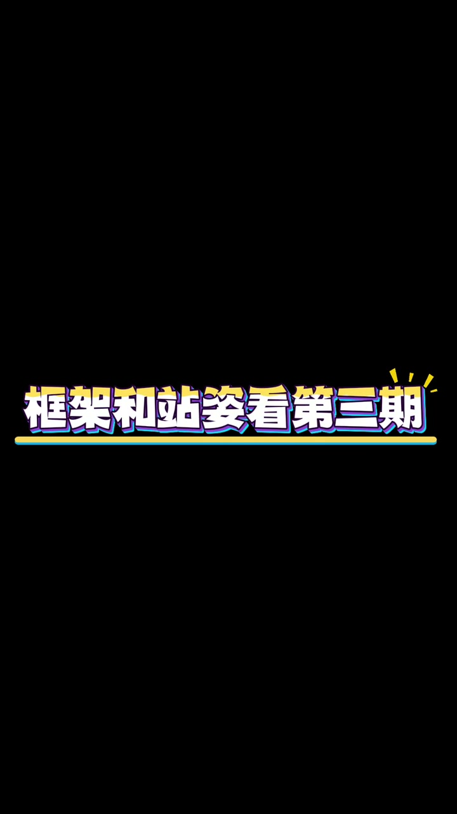
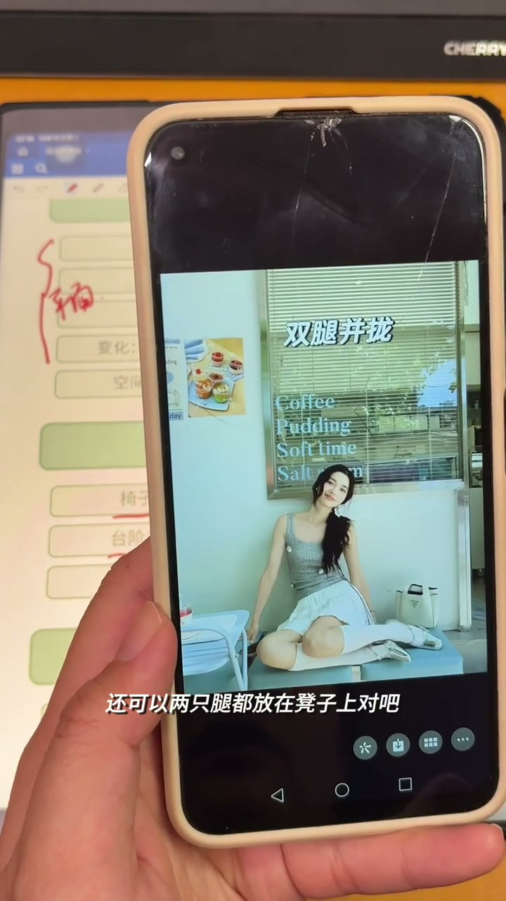
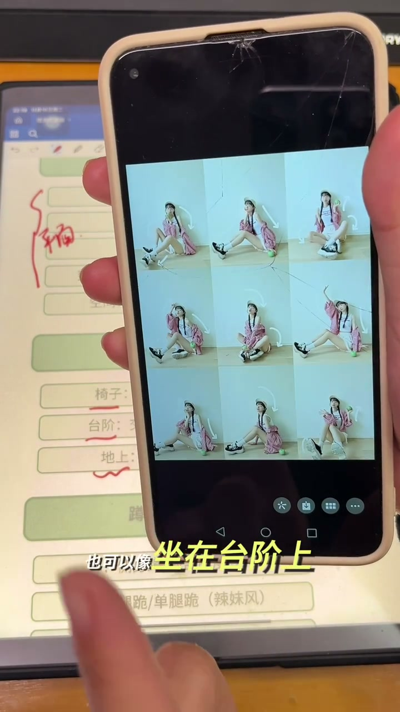
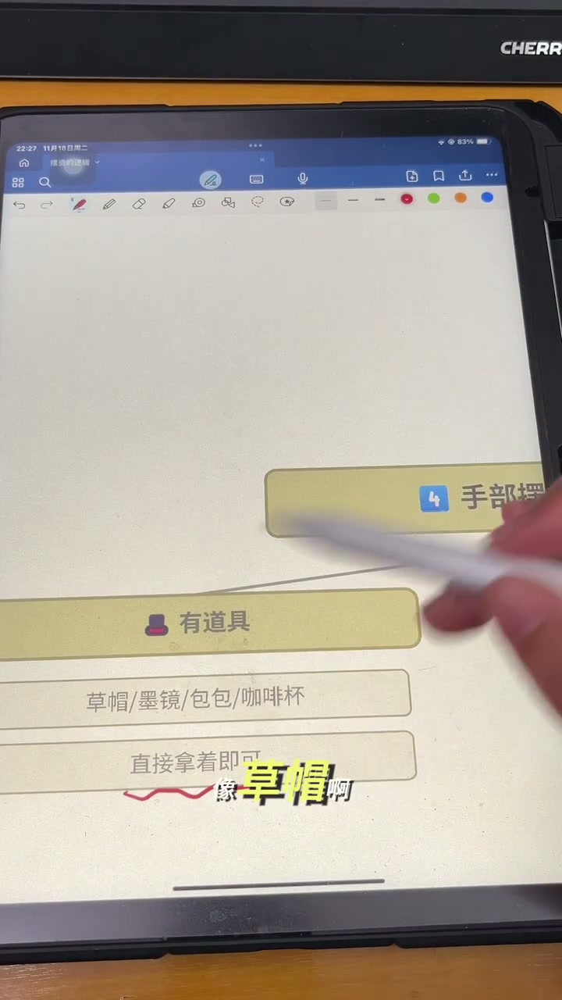
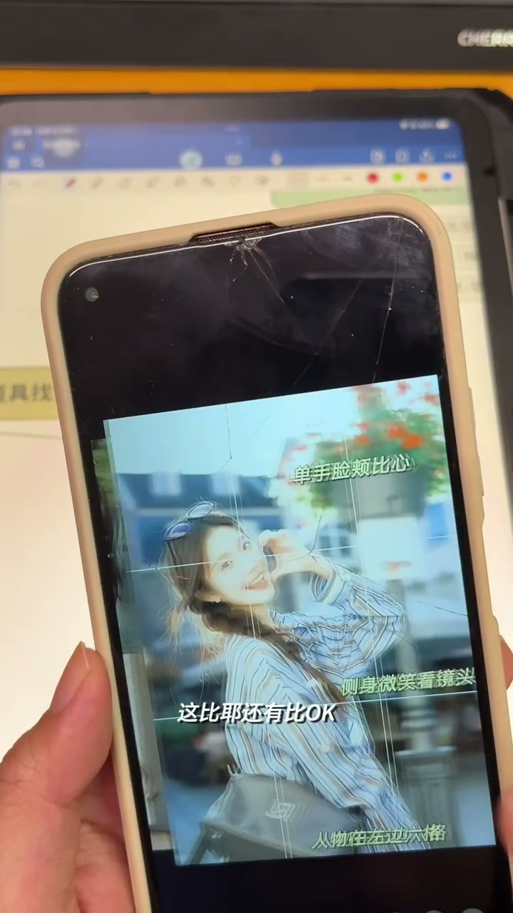

内容要点
[00:00] 摄影师怎么记住这么多摆姿和动作的呀
[00:02] 每次看他们拍摩特
[00:03] 十几二十种姿势还不重样
[00:05] 他们是偷偷不识的
[00:07] 再去拍呢
[00:07] 还是直接现场查
[00:09] 相信我
[00:09] 只要你清楚了摆姿背后的逻辑
[00:12] 你会发现
[00:13] 原来不是你记不住动作
[00:14] 而是你被过于的方法困住了
[00:17] 摄影师100问系列的第四期
[00:19] 摆姿背后的逻辑
[00:20] 今天我要讲的是十大师的干货
[00:22] 我还给你们列了详细的一个思维导徒
[00:26] 收藏下来慢慢看
[00:27] 相信我
[00:27] 只要你弄清楚了摆姿的逻辑
[00:29] 你就再也不需要去寄动
[00:31] 框架核战兹看第三期
[00:32] 接下来我们再看一下坐姿
[00:34] 坐姿主要有这三个场景
[00:35] 我们也不需要刻意去寄
[00:37] 它还是准许一个从高到低的一个原则
[00:39] 比如说
[00:39] 先坐在椅子上
[00:40] 再到台阶上
[00:41] 最后我们再坐在地上
[00:43] 我们坐在椅子上有哪些动作呢
[00:44] 主要去考虑一下腿的一个姿势
[00:46] 我们可以这样两腿张开
[00:48] 也可以把腿并拢
[00:49] 或者是敲二郎腿
[00:50] 这些都是比较常见的姿势
[00:52] 那么这个二郎腿
[00:52] 我们也可以把它直接放在凳子上
[00:56] 我们可以侧着敲
[00:57] 还可以两只腿都放在凳子上
[01:00] 这个姿势都是比较简单的
[01:02] 我们再来看一下台阶
[01:03] 那么台阶比较常见的
[01:05] 就是有这种一前一后
[01:06] 这样会显得我们的腿是比较长的
[01:09] 我们的手就直接搭在膝盖上就好了
[01:11] 还有这样
[01:12] 也是一前一后两个腿张开
[01:16] 还有一个姿势比较常见的
[01:17] 就是我们把它交叉
[01:18] 也是敲二郎腿
[01:19] 或者是只是双腿交叉
[01:21] 身体测作
[01:22] 这样能比较浪漫一些的姿势
[01:24] 那我们坐在地上
[01:25] 我们用的就是双腿并浓
[01:27] 或者是盘腿直接坐在地上
[01:29] 也可以像坐在台阶上
[01:30] 我们直接双腿的是交叉的
[01:32] 或者是腿是一前一后的
[01:35] 这个是坐在地上的姿势
[01:36] 其实很多用在台阶上的姿势
[01:37] 都可以用在坐在地上
[01:39] 大家可以仔细对比观察一下
[01:41] 我们再来看一下蹲姿
[01:43] 蹲姿一般都是测身蹲
[01:44] 我们主要看一下膝盖的一个高度变化
[01:46] 它有膝盖是同一高度的
[01:48] 和膝盖是不同高度的
[01:50] 最经典的测身蹲
[01:51] 我们注意一下膝盖是同一高度的
[01:53] 膝盖都是同一高度的
[01:54] 再来看一个
[01:54] 膝盖不同高度的
[01:56] 这样的蹲姿
[01:57] 再看一下跪姿
[01:57] 跪姿因为我自己拍的也是比较少
[01:59] 它是比较有视觉充滴力的
[02:01] 一些辣妹风格的
[02:02] 比如说单腿柜
[02:04] 单腿柜
[02:05] 或者是双腿柜
[02:06] 那可以看一下
[02:07] 脏姿和趴姿
[02:08] 就顾名思义
[02:09] 就比较适合居家和草坪这两个场景
[02:12] 不可以躺在地板上
[02:13] 或者是躺在草坪里面
[02:14] 或者是趴在床上
[02:16] 趴在草虫里
[02:17] 接下来我们重点讲讲手该怎么放
[02:19] 手不得摆放
[02:20] 有道具就拿道具
[02:21] 没道具我们就从头摸到脚
[02:22] 先来看看有道具的版本
[02:23] 像草帽啊
[02:24] 墨镜包包
[02:25] 咖啡杯这些
[02:25] 直接拿着就可以了
[02:27] 如果没有道具的话
[02:28] 我们就从头摸到脚
[02:29] 这个顺序也好记
[02:30] 我们首先从头开始
[02:32] 我们可以去摸额头啊
[02:33] 挡太阳
[02:34] 这样摸额头啊
[02:35] 挡额头啊
[02:36] 或者是我们去抓头发
[02:38] 发自己的头发
[02:39] 然后我们再去搭配像一些手势
[02:42] 比如说比OK啊
[02:44] 手张开啊
[02:45] 或者是比叶
[02:46] 冲着镜头出拳
[02:49] 还有比OK
[02:50] 还有比心
[02:51] 那么接下来就是脸部了
[02:53] 脸部也很简单
[02:53] 我们以这张图为例
[02:55] 我们可以怎么样
[02:55] 我们可以去拖一下我们的下巴
[02:57] 还有去摸鼻子啊
[02:58] 摸一下耳朵
[02:59] 摸一下嘴巴
[03:00] 这些都是可以的
[03:01] 但像刚刚这些姿势
[03:02] 其实也是可以在脸旁边去比出来的
[03:05] 我们脸完了是不是就到我们的上半身了
[03:06] 那上半身我们可以歪头去打招呼啊
[03:09] 或者是插腰
[03:10] 两个手打开
[03:12] 或者是抱胸在前面
[03:13] 那就是简单又好记的
[03:15] 那到下半身呢
[03:15] 一般就是插兜或者是提裙子
[03:18] 不然让它垂下来就好
[03:19] 比如说这样
[03:20] 到这里呢
[03:21] 公司已经掌握了不下30种摆姿加动作
[03:23] 你说我还是记不记不就怎么办
[03:24] 这里告诉大家一个技巧
[03:25] 就是每次拍摄前我都会去做一个策划
[03:28] 去告诉客们一个具体的姿势的参考的一个方案
[03:30] 那么即使它不会摆动作
[03:31] 你看完图以后你再去纠正
[03:33] 这样效率会更高
[03:34] 一次看不完没关系
[03:35] 收藏下来慢慢看
[03:36] 无论你是摄影师
[03:37] 还是平时喜欢拍照的姐妹
[03:38] 如果你忘记了动作怎么摆
[03:40] 可以打开这个视频
[03:41] 会持续分享新手摄影师的经验总结
[03:43] 如果你需要这个文档
[03:45] 可以在评论区告诉我
[03:46] 希望我走过的弯路你们不会再走






